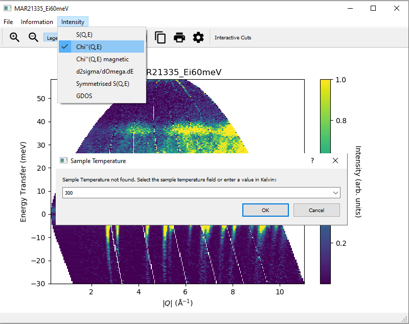
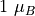

3. Taking Slices¶
This page provides a more in depth explanation of slicing in MSlice.
3.1. Slicing from the GUI¶
Depending on the loaded data type (see PSD and non-PSD modes), the Slice tab in the Workspace Manager
may be disabled. If this is the case, your data is in PSD mode and you have to first convert it to an MD Event
type workspace for MSlice to make slices and cuts. In the Powder tab shown above, select the desired axes (either
Momentum Transfer vs Energy Transfer or Scattering Angle vs Energy Transfer) and click Calculate Projection.
MSlice will then switch focus to the MD Event workspace produced by this step and enable the Slice and Cut
tabs. The reason for this intemediate step is to reorganise the large volume pixel data into a form which can be quickly and
efficiently rebinned into 2D slices and 1D cuts. MSlice uses the Mantid BinMD algorithm to rebin the data for slices and cuts.
For smaller volume Non-PSD mode data, MSlice uses less efficient algorithms (Rebin2D and SofQWNormalisedPolygon) to rebin the loaded data directly.
Another reason for this division depending on the data type is that BinMD only performs a centre-point rebinning,
whereas the other (strictly 2D) algorithms perform the usual fractional weighted binning which is more accurate for
non-pixellated data.

Once the Slice tab is enabled (either by selecting an MD Event type workspace or a Non-PSD mode workspace),
you can plot a 2D slice using the default parameters (axes limits and step sizes) obtained from the data by clicking
Display. You can also change the binning parameters before displaying the slice, or you can normalise the displayed data
such that the maximum intensity is unity by checking the Norm to 1 checkbox.
Like with cuts (see Cutting from the GUI), double-clicking on the axes or their titles allows you to change the
limits of the plots of the text of the titles. Clicking on the cog icon will bring up an Options dialog which allows you
to change all these properties simultaneously.
3.2. Overplotting recoil and powder lines¶

{kind=link}
To help with a “first look” data analysis, MSlice can overplot on the 2D slices the recoil lines of light nuclei
(Hydrogen 1H, Deuterium 2H, Helium and 4He are implemented but a user defined Z is also
available), and the positions of powder reflections from common sample environment materials (Aluminium, Copper,
Niobium and Tantalum). These functionalities may be accessed from the Information menu option as shown above.
Powder reflections from an arbitrary crystallographic information format (CIF) file can also be plotted but note that we use the PyCifRW package to read CIF files and that some files generated by FullProf or GSAS may not be readable. In these cases, please load the files in Vesta or OpenBabel and resave them.
3.3. Converting intensity information in displayed data in slices¶
{kind=link}
In addition to displaying the data as , the slice figure window can also display the data with the Bose factor corrected, as the dynamical susceptibility or as the density of states. For these options, the sample temperature must be given. This can either be specified as a log key, if the sample temperature is logged in the datafile, or a user inputted value (just type into the dropdown combobox). If a log key is given, MSlice will compute the mean temperature from the log series.
The different options are related to the default view by:
The dynamical susceptibility,
The magnetic dynamical susceptibility
The cross-section,
A “symmetrised” where the intensities for the neutron energy gain (negative energy) side is multiplied by the factor.
The general (neutron weighted) density of states defined by
Where  is the boson population factor for neutron energy loss (boson creation,
positive sign) or neutron energy gain (boson anihilation, negative sign). In particular the code uses:
is the boson population factor for neutron energy loss (boson creation,
positive sign) or neutron energy gain (boson anihilation, negative sign). In particular the code uses:
is the neutron g-factor, and is the classical electron radius, with = 291 milibarn being the total magnetic cross-section for a moment of .
If the intensity information is converted for a slice, any cut taken from the slice via Interactive Cuts will be of the converted intensity type.
3.4. Saving slices to file¶
The data in a slice may be saved using the floppy icon in the slice figure window to Nexus (.nxs), Matlab (.mat)
or ASCII text (.txt or .xye in a four-column x (x-coordinate), y (y-coordinate), s (signal), e
(uncertainty) format). For PSD mode, the same information can be saved using the Save button in the MD Event
tab. For Non-PSD mode data the equivalent Save button in the 2D tab will save the original (loaded) data
in spectrum number versus energy transfer rather than the units of the slice. Thus for Non-PSD mode you must use
the floppy disk icon in the slice figure window to save the data. In addition, you can save an image of the slice to
.png or .pdf formats.